1. 템플릿 저장소 관리
UML 모델 템플릿을 가져올 때 사용하는 템플릿 저장소 관리입니다. 프로젝트 탐색기에서 프로젝트나 폴더를 선택한 후, 마우스 오른쪽 클릭하여 [Import]를 선택합니다.

<그림 1. 프로젝트 탐색기에서 Import 선택하기>
[NEXCORE UML 모델링 도구 > UML 모델 템플릿]을 선택하고 [Next] 버튼을 클릭합니다.

<그림 2. UML 모델 템플릿 선택>
[템플릿 저장소]를 선택할 수 있는 화면이 나옵니다. 기본적으로 내장된 템플릿이 콤보박스에 표시되며, 이 템플릿 이외의 템플릿을 사용하고자 할 때는 템플릿 저장소를 추가해주어야 합니다. 템플릿 저장소를 관리하기 위해 [템플릿 저장소] 항목 오른쪽에 있는 [관리..] 버튼을 클릭합니다.
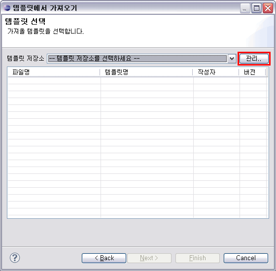
<그림 3. 템플릿 선택 다이얼로그>
아래와 같은 템플릿 저장소 관리 다이얼로그가 나타나며, 이 다이얼로그에서 템플릿 저장소에 대한 설정을 할 수 있습니다.
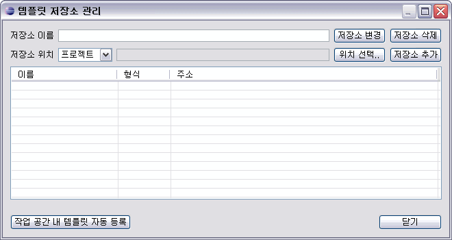
<그림 4. 템플릿 저장소 관리 다이얼로그>
1.1 템플릿 저장소 추가
템플릿 저장소를 추가하기 위해, 먼저 [저장소 이름]을 입력합니다.
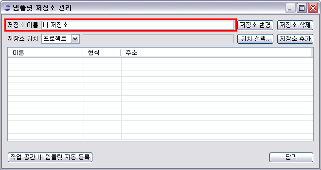
<그림 5. 템플릿 저장소 이름 입력>
다음으로 [저장소 위치]를 지정하는데, [저장소 위치] 항목의 앞 쪽에 위치한 콤보박스에서 [프로젝트],[디렉토리],[ZIP],[JAR] 중 하나를 선택할 수 있습니다. 어떤 위치 형식을 선택하느냐에 따라서 [위치 선택..] 버튼 클릭 시 나타나는 화면이 다릅니다.
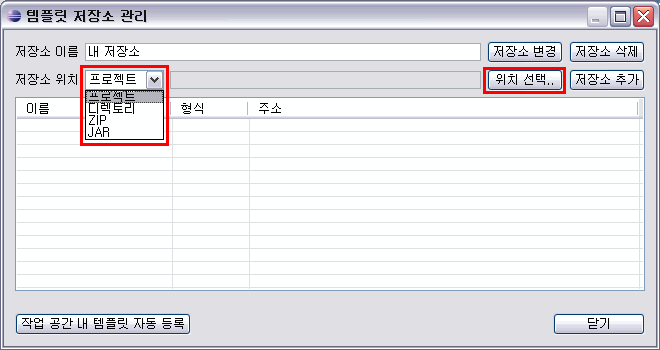
<그림 6. 템플릿 저장소 위치 선택 옵션>
저장소 위치를 [프로젝트]로 선택했을 경우, [위치 선택..] 버튼을 클릭하면, 작업 공간 내의 프로젝트와 폴더가 트리 형태로 표시됩니다.
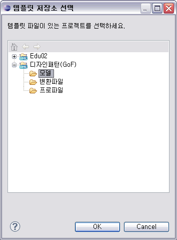
<그림 7. [프로젝트] 선택 시 위치 선택 화면>
저장소 위치를 [디렉토리]로 선택했을 경우, [위치 선택..] 버튼을 클릭하면, 파일 시스템 내의 폴더를 선택할 수 있는 화면이 나타납니다.
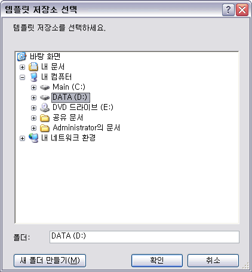
<그림 8. [디렉토리] 선택 시 위치 선택 화면>
저장소 위치를 [ZIP]로 선택했을 경우, [위치 선택..] 버튼을 클릭하면, 파일 시스템 내의 ZIP 파일을 선택할 수 있습니다. 그리고 저장소 위치를 [JAR]로 선택했을 경우, [위치 선택..] 버튼을 클릭하면, 파일 시스템 내의 JAR 파일을 선택할 수 있습니다. 이 때 선택하는 ZIP이나 JAR 파일에는 NEXCORE UML 모델러에서 생성한 모델 템플릿(*.umt)이 포함되어 있어야 템플릿 저장소를 정상적으로 추가할 수 있습니다.
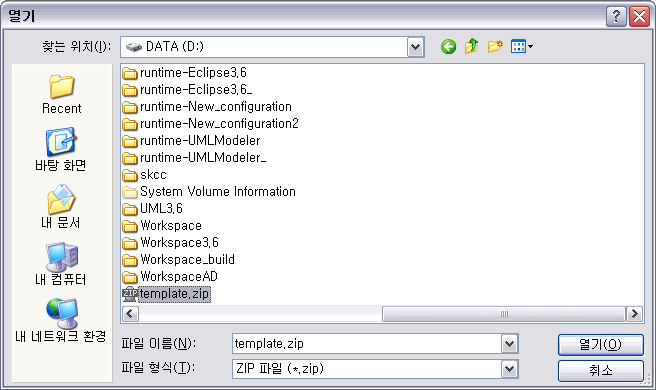
<그림 9. [ZIP] 선택 시 위치 선택 화면>
저장소 위치 유형을 선택하고 위치까지 지정하였다면, 이제 [저장소 추가] 버튼을 클릭합니다.
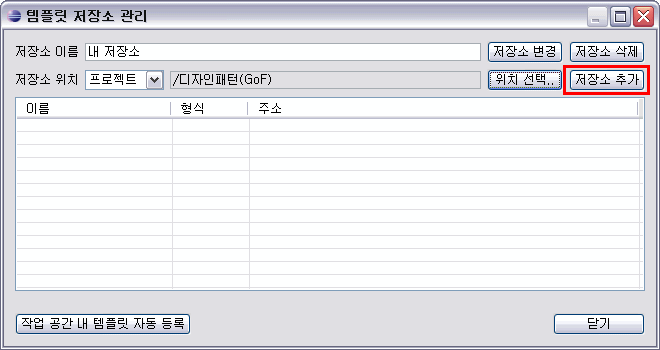
<그림 10. 저장소 추가>
저장소가 추가되어 다이얼로그 하단의 리스트에 표시됩니다. 이 저장소를 [템플릿 저장소] 선택 화면에서 선택하여, 이 저장소 내에 저장된 모델 템플릿을 사용할 수 있습니다.
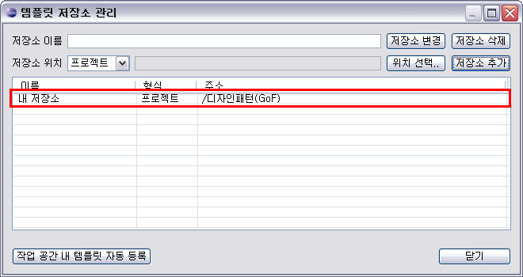
<그림 10. 저장소 추가 완료>
1.2 템플릿 저장소 변경
이미 설정되어 있는 템플릿 저장소를 변경할 수 있습니다. [템플릿 저장소 관리] 다이얼로그의 하단 리스트 중 하나를 선택합니다. 그러면 선택한 저장소의 정보가 리스트의 상단에 편집 가능한 상태로 표시됩니다. 이 상태에서 [저장소 이름]을 변경할 수 있습니다. [저장소 위치]는 [위치 선택..] 버튼을 클릭하여 다른 위치를 선택하면 됩니다.
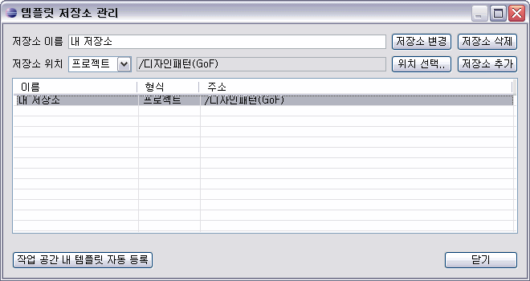
<그림 11. 설정된 템플릿 저장소 선택>
등록된 저장소에 대한 수정이 완료되면, [저장소 변경] 버튼을 클릭하여 저장할 수 있습니다. [저장소 변경] 버튼을 클릭하면 [변경하시겠습니까?]라는 확인 메시지 다이얼로그가 표시되며, [Yes] 버튼을 클릭하면 변경이 완료되어 [템플릿 저장소 관리] 다이얼로그의 하단 리스트에 변경된 내용이 표시됩니다.
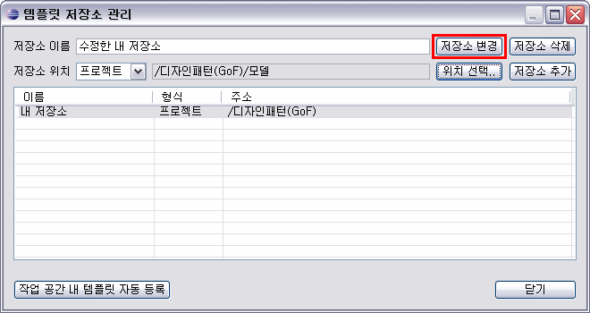
<그림 12. 저장소 변경>
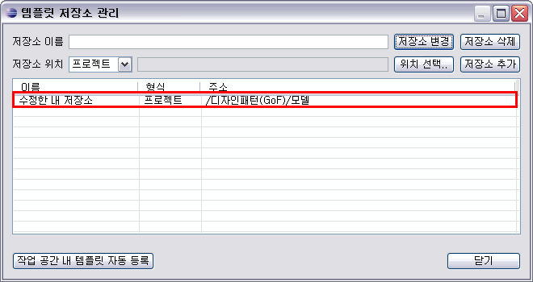
<그림 13. 저장소 변경 완료>
1.3 템플릿 저장소 삭제
등록된 템플릿 저장소를 삭제할 수 있습니다. [템플릿 저장소 관리] 다이얼로그의 하단 리스트에서 삭제하고자 하는 저장소를 선택하고 [저장소 삭제] 버튼을 클릭합니다. [정말 삭제하시겠습니까?]라는 메시지 다이얼로그가 표시되고, [Yes] 버튼을 클릭하면 해당 템플릿 저장소가 삭제됩니다.
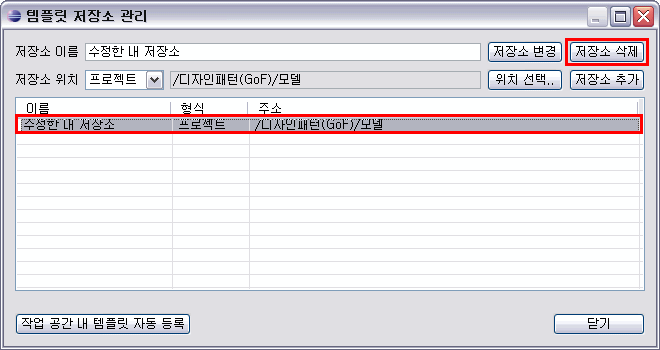
<그림 14. 템플릿 저장소 삭제>
1.4 작업 공간 내 템플릿 자동 등록
작업 공간 내에 위치한 모델 템플릿을 일일이 템플릿 저장소 등록을 하지 않고 한꺼번에 자동으로 추가할 수 있습니다. [템플릿 저장소 관리] 다이얼로그의 왼쪽 하단에 위치한 [작업 공간 내 템플릿 자동 등록] 버튼을 클릭하면 [작업 공간 내의 템플릿들을 자동으로 등록하시겠습니까?]라는 메시지 다이얼로그가 표시되며, 여기서 [Yes]를 클릭하면 템플릿 저장소가 자동 등록됩니다. 등록된 템플릿 저장소들은 [템플릿 저장소 관리] 화면의 리스트에 표시되며, 해당 저장소에 있는 템플릿들을 사용할 수 있게 됩니다.
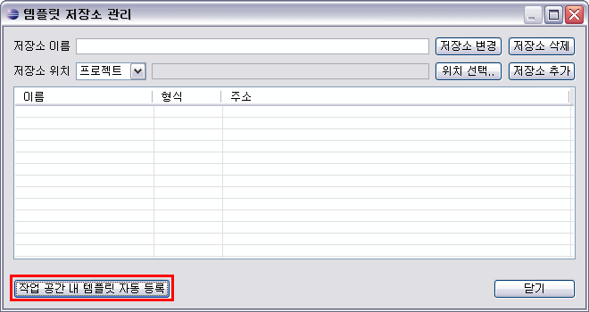
<그림 15. 작업 공간 내 템플릿 자동 등록>
2. 템플릿 문자열 치환
작성한 UML 모델을 템플릿 파일로 내보낼 때 특정 문자열을 일괄 치환해서 템플릿 파일로 저장할 수
있습니다.
프로젝트 탐색기에서 프로젝트나 폴더를 선택한 후, 마우스 오른쪽 클릭하여 [Export]를 선택합니다.

<그림 16. 프로젝트 탐색기에서 Export 선택>
[NEXCORE UML 모델링 도구 > UML 모델 템플릿]을 선택하고 [Next] 버튼을 클릭합니다.

<그림 17. UML 모델 템플릿 선택>
[프로젝트 목록]에서 내보낼 프로젝트를 체크하고, 화면 하단에서 [템플릿명], [작성자], [버전]을 입력하고, [템플릿 저장 위치]도 설정한 후, [Next] 버튼을 클릭합니다.
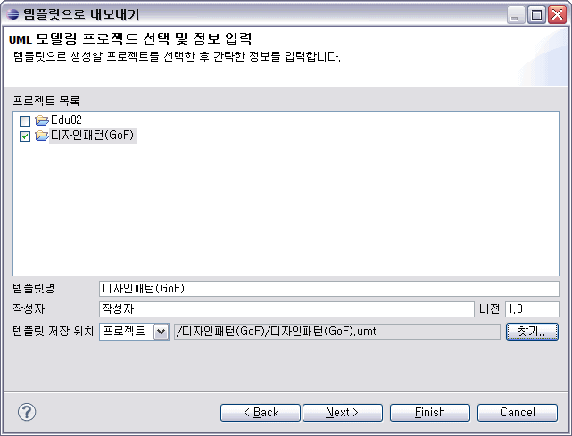
<그림 18. 템플릿 저장 정보 입력>
[템플릿 문자열 치환] 화면이 나타납니다. 여기서 UML 모델에 작성된 요소들의 이름을 일괄 변경할 수 있습니다. 템플릿 문자열 치환 기능을 사용하여 모델 템플릿을 내보내려면 [문자열 치환 사용]에 체크하면 됩니다. 문자열 치환을 하지 않고 모델 템플릿을 내보내려면 아래의 그림과 같은 상태에서 [Finish] 버튼을 클릭하면 됩니다.
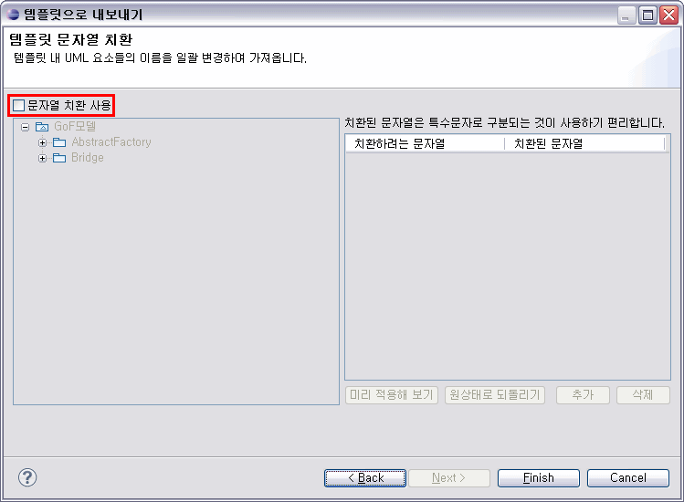
<그림 19. 템플릿 문자열 치환>
[문자열 치환 사용]에 체크하면 화면 왼쪽에 있는 트리에서 템플릿으로 내보내려는 모델의 구조를 확인할 수 있습니다. 화면의 오른쪽에는 치환할 문자열에 관한 사항을 입력할 수 있습니다. [치환하려는 문자열]에는 현재 UML 모델에 사용된 문자열 중에서 치환하고 싶은 문자열을 입력합니다. 같은 행에서 [치환된 문자열] 란에 해당 문자열을 어떤 형태로 치환할 것인지를 입력합니다. 입력한 치환 문자열이 어떤 모양으로 템플릿으로 저장될 지는 리스트 하단에 있는 [미리 적용해 보기] 버튼을 클릭하면 왼쪽의 트리에서 치환된 모습을 확인할 수 있습니다. [치환된 문자열]에는 특수문자로 구분된 문자열을 입력하는 것이 좋습니다. 여기서 생성한 템플릿 파일을 다른 모델에 적용할 때, 여기서 입력한 문자열을 사용할 수 있으며, 이 때 특수문자로 구분된 문자열은 정확한 문자열 치환이 가능하게 합니다.
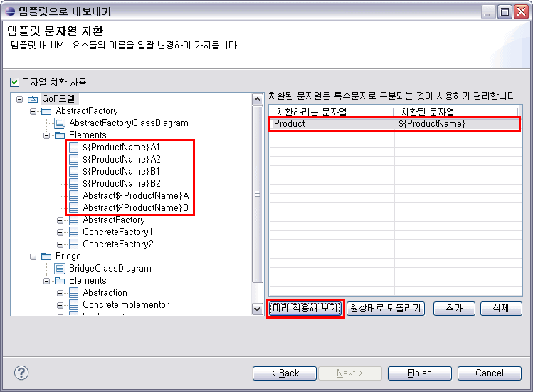
<그림 20. 문자열 치환 미리 적용>
문자열 치환 미리 적용을 한 다음, 다시 원래 상태의 모델 구조를 확인하고 싶을 때는 [원상태로 되돌리기] 버튼을 클릭하면 됩니다.
치환 문자열을 더 추가하려면 [추가] 버튼을 클릭하고 리스트에 새로 생긴 행에 치환 문자열을 입력하면 됩니다. 치환 문자열을 삭제하려면 리스트에서 삭제하려는 치환 문자열을 선택한 후, [삭제] 버튼을 클릭합니다.
치환할 문자열에 대한 작성이 끝나면 [Finish] 버튼을 클릭합니다. [정상적으로 저장되었습니다.]라는 메시지 다이얼로그가 표시되며, 문자열이
치환된 모델 템플릿이 생성됩니다.
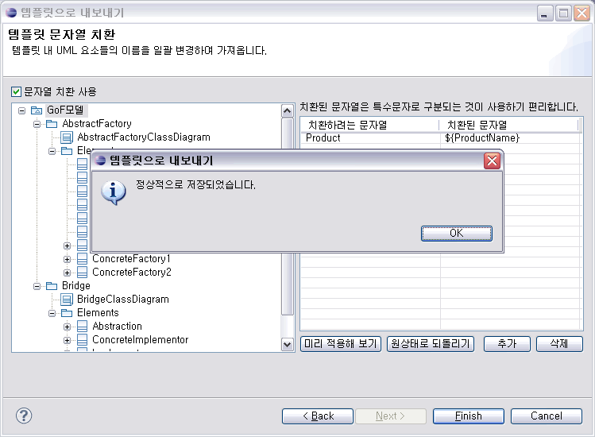
<그림 21. 문자열 치환하여 템플릿 내보내기 완료>
3. UML 요소 이름 치환
NEXCORE UML 모델러에서 생성한 모델 템플릿을 가져올 때, 템플릿에 있는 요소들의 이름을 일괄 치환할 수 있습니다.
프로젝트 탐색기에서 프로젝트나 폴더를 선택한 후, 마우스 오른쪽 클릭하여 [Import]를 선택합니다.
<그림 22. 프로젝트 탐색기에서 Import 선택>
템플릿 저장소를 선택하고, 리스트에서 템플릿도 선택한 후, [Next] 버튼을 클릭합니다.
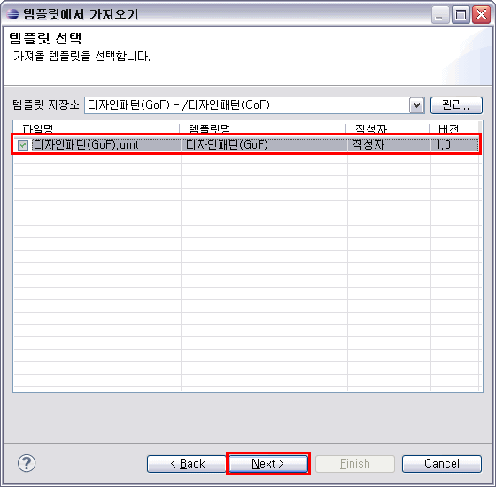
<그림 23. 템플릿 선택>
템플릿에서 가져온 요소들을 저장할 위치나 모델을 선택하고, 템플릿에서 가져올 다이어그램도 선택한 후, [Next] 버튼을 클릭합니다.
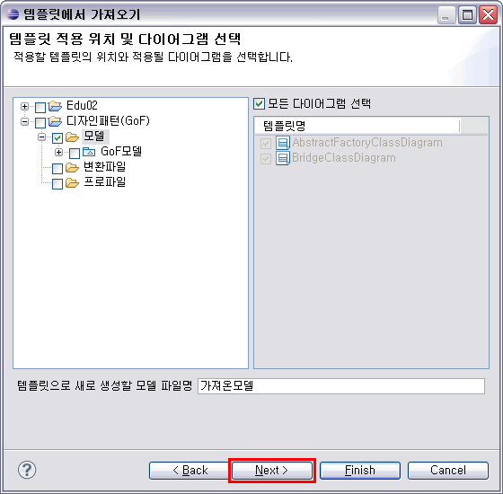
<그림 24. 템플릿 적용 위치 및 다이어그램 선택>
템플릿에 저장된 모델 구조가 왼쪽 트리에 표시되고, 치환 가능한 문자열들이 표시됩니다. 여기서 [치환된 문자열] 란에 템플릿을 가져오면서 치환할 UML 요소 이름을 입력합니다.
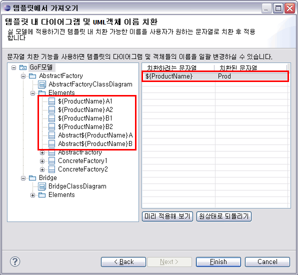
<그림 25. UML 요소 이름 치환 전>
[미리 적용해 보기] 버튼을 클릭하여 왼쪽 트리에서 UML 요소명이 치환된 모습을 확인할 수 있습니다. 여기서 미리보기한 모양대로 템플릿에 있는 문자열을 치환하여 가져오게 됩니다. [원상태로 되돌리기] 버튼을 클릭하면 템플릿에 저장된 상태의 모델을 다시 확인할 수 있습니다.
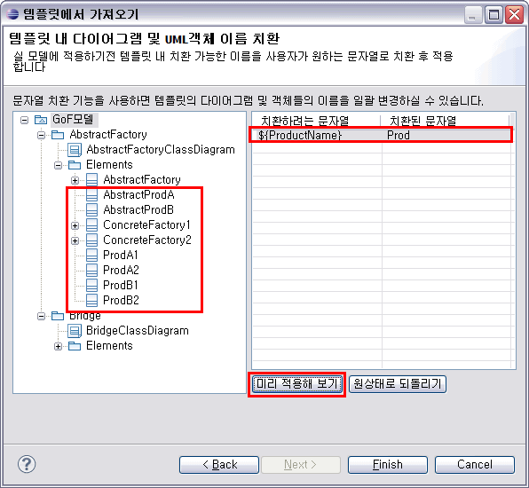
<그림 26. 치환 문자열 입력 후 미리보기>
치환할 문자에 대한 편집이 끝나면 [Finish] 버튼을 클릭합니다. 진행 상태가 다이얼로그 하단에 표시되고, [템플릿에서 가져오기가 완료되었습니다.]라는 메시지 다이얼로그가 표시되면서 템플릿에서 가져오기가 완료됩니다. 프로젝트 탐색기에서, 가져온 템플릿이 문자열 치환되어 모델로 생성된 것을 확인할 수 있습니다.
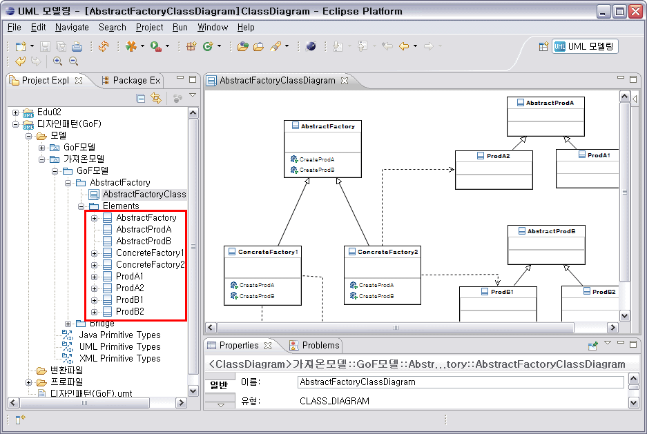
<그림 26. 문자열 치환하여 생성된 모델>